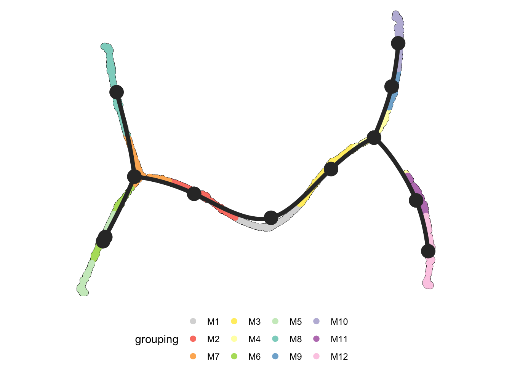
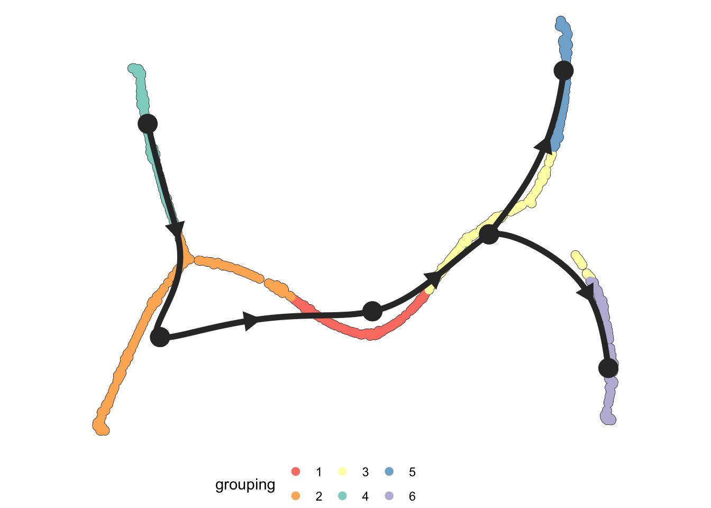
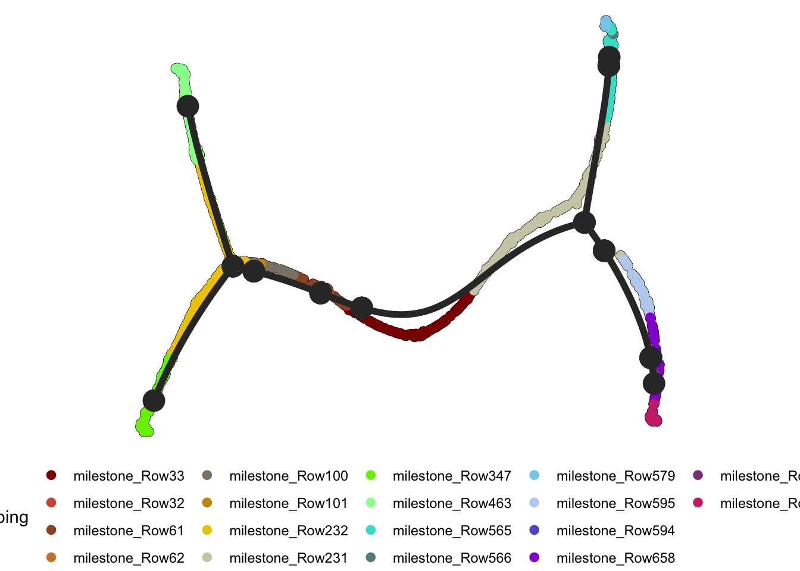
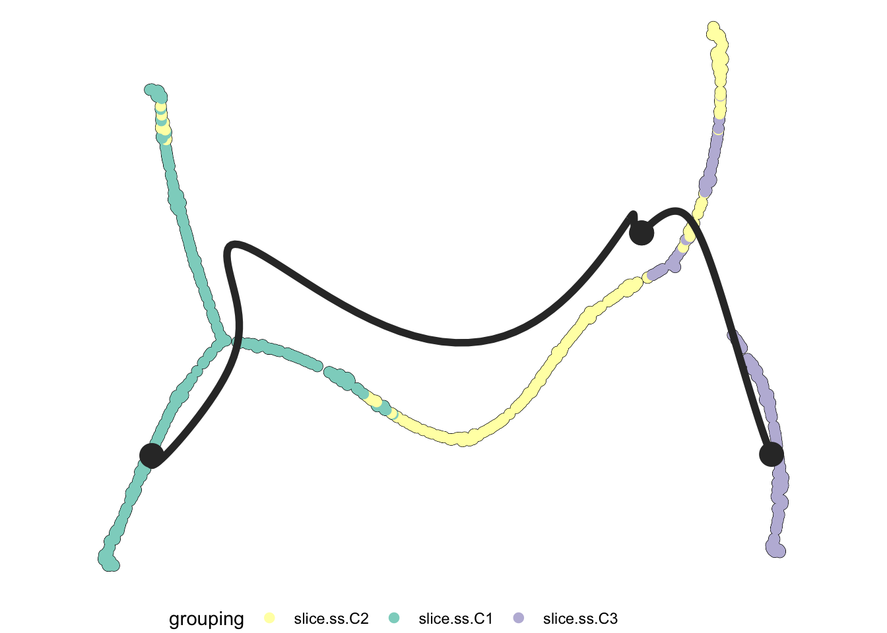
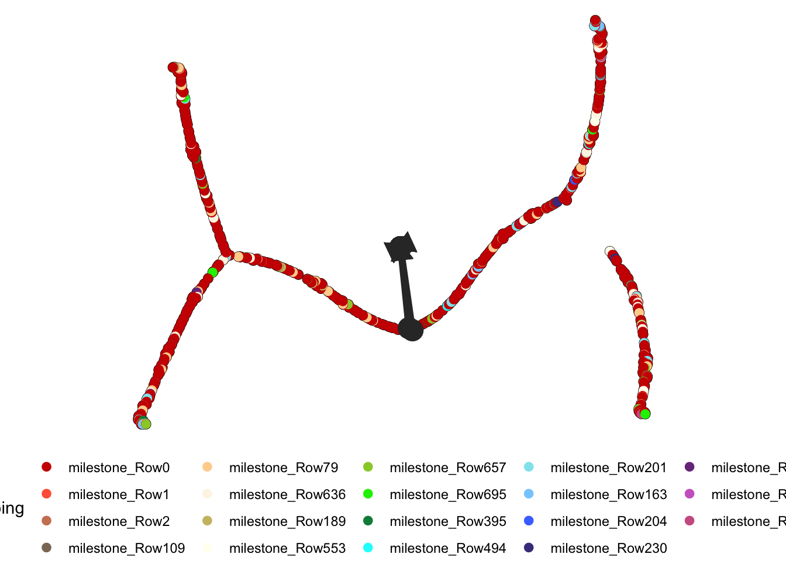
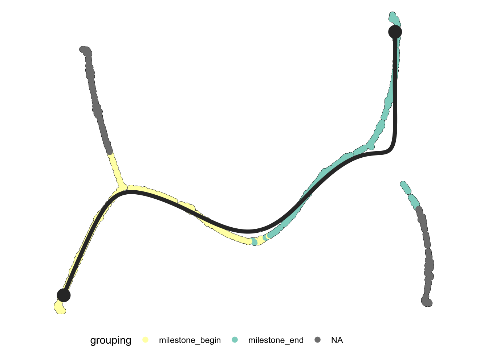
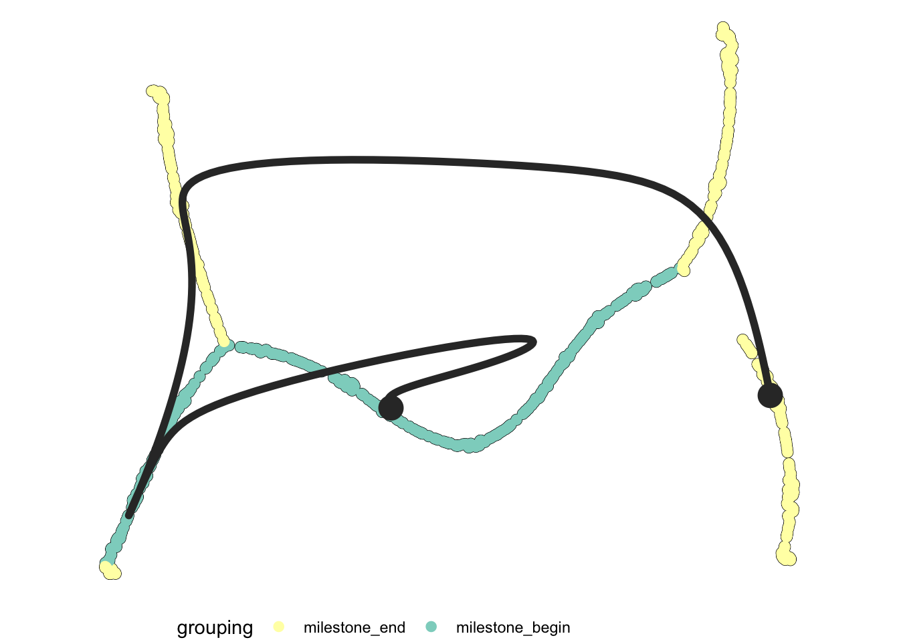

Last updated: 2022-01-20
Checks: 7 0
Knit directory: treedata.nosync/
This reproducible R Markdown analysis was created with workflowr (version 1.7.0). The Checks tab describes the reproducibility checks that were applied when the results were created. The Past versions tab lists the development history.
Great! Since the R Markdown file has been committed to the Git repository, you know the exact version of the code that produced these results.
Great job! The global environment was empty. Objects defined in the global environment can affect the analysis in your R Markdown file in unknown ways. For reproduciblity it’s best to always run the code in an empty environment.
The command set.seed(20220117) was run prior to running the code in the R Markdown file. Setting a seed ensures that any results that rely on randomness, e.g. subsampling or permutations, are reproducible.
Great job! Recording the operating system, R version, and package versions is critical for reproducibility.
Nice! There were no cached chunks for this analysis, so you can be confident that you successfully produced the results during this run.
Great job! Using relative paths to the files within your workflowr project makes it easier to run your code on other machines.
Great! You are using Git for version control. Tracking code development and connecting the code version to the results is critical for reproducibility.
The results in this page were generated with repository version 0c6bb22. See the Past versions tab to see a history of the changes made to the R Markdown and HTML files.
Note that you need to be careful to ensure that all relevant files for the analysis have been committed to Git prior to generating the results (you can use wflow_publish or wflow_git_commit). workflowr only checks the R Markdown file, but you know if there are other scripts or data files that it depends on. Below is the status of the Git repository when the results were generated:
Ignored files:
Ignored: .DS_Store
Ignored: .Rhistory
Ignored: data/.DS_Store
Ignored: data/ContinuousTrees/.DS_Store
Ignored: data/NodeTrees/.DS_Store
Ignored: data/NodeTrees/NodeTree1/.DS_Store
Ignored: data/NodeTrees/NodeTree2/.DS_Store
Ignored: data/NodeTrees/NodeTree3/.DS_Store
Ignored: data/NodeTrees/NodeTree4/.DS_Store
Ignored: data/NodeTrees/NodeTree5/.DS_Store
Ignored: data/NodeTrees/NodeTree6/.DS_Store
Ignored: data/NodeTrees/NodeTree7/.DS_Store
Ignored: data/NodeTrees/NodeTree8/.DS_Store
Ignored: data/NodeTrees/NodeTree9/.DS_Store
Ignored: data/dynversetree/.DS_Store
Ignored: data/dynversetree/EBMFfactors/.DS_Store
Ignored: output/.DS_Store
Ignored: output/ContinuousTrees/.DS_Store
Ignored: output/ContinuousTrees/tree1/.DS_Store
Ignored: output/ContinuousTrees/tree1/EBMFfactors/.DS_Store
Ignored: output/ContinuousTrees/tree2/.DS_Store
Ignored: output/ContinuousTrees/tree2/EBMFfactors/.DS_Store
Ignored: output/ContinuousTrees/tree3/.DS_Store
Ignored: output/ContinuousTrees/tree3/EBMFfactors/.DS_Store
Ignored: output/ContinuousTrees/tree4/.DS_Store
Ignored: output/ContinuousTrees/tree4/EBMFfactors/.DS_Store
Ignored: output/NodeTrees/.DS_Store
Ignored: output/NodeTrees/NodeTree1/.DS_Store
Ignored: output/NodeTrees/NodeTree1/EBMFfactors/.DS_Store
Ignored: output/NodeTrees/NodeTree2/.DS_Store
Ignored: output/NodeTrees/NodeTree2/EBMFfactors/.DS_Store
Ignored: output/NodeTrees/NodeTree3/.DS_Store
Ignored: output/NodeTrees/NodeTree3/EBMFfactors/.DS_Store
Ignored: output/NodeTrees/NodeTree4/.DS_Store
Ignored: output/NodeTrees/NodeTree4/EBMFfactors/.DS_Store
Ignored: output/NodeTrees/NodeTree5/.DS_Store
Ignored: output/NodeTrees/NodeTree5/EBMFfactors/.DS_Store
Ignored: output/NodeTrees/NodeTree6/.DS_Store
Ignored: output/NodeTrees/NodeTree6/EBMFfactors/.DS_Store
Ignored: output/NodeTrees/NodeTree7/.DS_Store
Ignored: output/NodeTrees/NodeTree7/EBMFfactors/.DS_Store
Ignored: output/NodeTrees/NodeTree8/.DS_Store
Ignored: output/NodeTrees/NodeTree8/EBMFfactors/.DS_Store
Ignored: output/NodeTrees/NodeTree9/.DS_Store
Ignored: output/NodeTrees/NodeTree9/EBMFfactors/.DS_Store
Untracked files:
Untracked: output/ContinuousTrees/tree1/nbt1406.pdf
Unstaged changes:
Modified: output/ContinuousTrees/tree1/EBMFfactors/covF.csv
Modified: output/ContinuousTrees/tree1/EBMFfactors/covL.csv
Modified: output/ContinuousTrees/tree1/EBMFfactors/covpve.csv
Modified: output/ContinuousTrees/tree1/EBMFfactors/covscale.csv
Modified: output/ContinuousTrees/tree1/EBMFfactors/divF.csv
Modified: output/ContinuousTrees/tree1/EBMFfactors/divL.csv
Modified: output/ContinuousTrees/tree1/EBMFfactors/divpve.csv
Modified: output/ContinuousTrees/tree1/EBMFfactors/divscale.csv
Modified: output/ContinuousTrees/tree1/EBMFfactors/driftF.csv
Modified: output/ContinuousTrees/tree1/EBMFfactors/driftL.csv
Modified: output/ContinuousTrees/tree1/EBMFfactors/driftpve.csv
Modified: output/ContinuousTrees/tree1/EBMFfactors/driftscale.csv
Modified: output/NodeTrees/NodeTree4/EBMFfactors/divF.csv
Modified: output/NodeTrees/NodeTree4/EBMFfactors/divL.csv
Modified: output/NodeTrees/NodeTree4/EBMFfactors/divpve.csv
Modified: output/NodeTrees/NodeTree4/EBMFfactors/divscale.csv
Modified: output/NodeTrees/NodeTree4/EBMFfactors/driftF.csv
Modified: output/NodeTrees/NodeTree4/EBMFfactors/driftL.csv
Modified: output/NodeTrees/NodeTree4/EBMFfactors/driftpve.csv
Modified: output/NodeTrees/NodeTree4/EBMFfactors/driftscale.csv
Note that any generated files, e.g. HTML, png, CSS, etc., are not included in this status report because it is ok for generated content to have uncommitted changes.
These are the previous versions of the repository in which changes were made to the R Markdown (analysis/dynverse_testing.rmd) and HTML (docs/dynverse_testing.html) files. If you’ve configured a remote Git repository (see ?wflow_git_remote), click on the hyperlinks in the table below to view the files as they were in that past version.
| File | Version | Author | Date | Message |
|---|---|---|---|---|
| html | bd9faab | Sue Parkinson | 2022-01-17 | Build site. |
| html | 9a0676f | Sue Parkinson | 2022-01-17 | update website with ebmf and dynverse vignettes |
| Rmd | d8a78d6 | Sue Parkinson | 2022-01-17 | update ebmf and dunverse pages |
This analysis will use several mehods from the Dynverse package to detect tree structure in some synthetic datasets.
I first import some libraries, including dyno. The dyno package is part of the dynverse collection of R packages to do trajectory inference. Many popular methods are included in dynverse in convenient wrappers that unify the input/output formats. (Note: dynverse does require docker or singularity in order to run. It also requires the hdf5r package to be installed.) I also import the ebnm in order to compare to functions from Jason’s thesis.
library(dplyr)
library(flashier)
library(tidyverse)
library(ebnm)
library(dyno)The methods I will use from drift_div_factorizations.R are div_cov_fit and div_fit, which compute the divergence factorization from either the data or the covariance matrix.
The data I will use for this testing uses the brownian motion model to generate data continuously along the branches of a tree. For details, see code/continuous_tree_datagen.py. The data is saved in the folder data/ContinuousTrees. The following functions parse the raw data into a format that can be read by dynverse.
form_tree_from_file <- function(filename){
tree <- vector(mode="list")
tree$csv <- read.csv(filename,row.names=1)
tree$raw <- tree$csv %>%
select(Raw0:Raw499)
tree$matrix <- as.matrix(tree$raw)
tree$dimred <- tree$csv %>%
select(tsne0:tsne1)
#As input, dynwrap requires raw counts and normalised (log2) expression data.
tree$counts <- round(2**(tree$raw)-1)
tree$counts[tree$counts<0] <- 0
tree$dataset <- wrap_expression(
expression = tree$matrix,
counts = as.matrix(tree$counts)
)
tree$dataset <- add_prior_information(
tree$dataset,
start_id = "Row0",
start_n = 1,
end_n = 4,
)
return(tree)
}I now parse the four datasets.
tree1 <- form_tree_from_file('data/ContinuousTrees/tree1.csv')
tree2 <- form_tree_from_file('data/ContinuousTrees/tree2.csv')
tree3 <- form_tree_from_file('data/ContinuousTrees/tree3.csv')
tree4 <- form_tree_from_file('data/ContinuousTrees/tree4.csv')The dynverse package has a function that advises the users on which methods are most suited to their problem. The methods they recommend for size of our data and with certain time and memory constraints are recorded in guidelines below.
# Reproduces the guidelines as created in the shiny app
answers <- dynguidelines::answer_questions(
multiple_disconnected = FALSE,
expect_topology = TRUE,
expected_topology = "tree",
n_cells = 700,
n_features = 500,
time = "10m",
memory = "5GB",
prior_information = c("start_id", "end_n", "start_n"),
method_selection = "fixed_n_methods",
fixed_n_methods = 10,
docker = TRUE
)
guidelines <- dynguidelines::guidelines(answers = answers)To see an interactive/shiny version of the guidelines, run the following code.
dynguidelines::guidelines_shiny(answers = answers)The methods I will use from dynverse are
mstslingshotsincellsliceslicertscanwaterfallThere were several other methods from dynverse that I attempted to use, but did not work for various reasons. Below are methods recommended by dynverse that did not work.
paga and paga_tree: gave an index errorpcreode: was very slowelpigraph: was very slowmonocle_ica: threw the error undefined column #monocle 1raceid_stemid: gave the error execution haltedHere are some other methods that dynverse did not recommend, but I tried anyway without success. * urd: error in length of dimnames * scuba: error in size of an array * mpath: needs group cluster labels as a prior * wishbone: python value error * wanderlust: python value error * scoup: needs group cluster labels as a prior
Below are functions based off of Jason’s code which compute a divergence factorization of the code with point-laplace priors.
div_cov_fit <- function(covmat, filename, prior = prior.point.laplace(), Kmax = 1000) {
fl <- div_fit(covmat, filename, prior, Kmax)
s2 <- max(0, mean(diag(covmat) - diag(fitted(fl))))
s2_diff <- Inf
while(s2 > 0 && abs(s2_diff - 1) > 1e-4) {
covmat_minuss2 <- covmat - diag(rep(s2, ncol(covmat)))
fl <- div_fit(covmat_minuss2,filename, prior, Kmax)
old_s2 <- s2
s2 <- max(0, mean(diag(covmat) - diag(fitted(fl))))
s2_diff <- s2 / old_s2
}
fl$ebcovmf_s2 <- s2
return(fl)
}
div_fit <- function(dat,filename, prior = prior.point.laplace(), Kmax = Inf, min_pve = 0, verbose.lvl = 0) {
#the first loading will be the all-ones vector
ones <- matrix(1, nrow = nrow(dat), ncol = 1)
#first factor will be least sq soln: argmin_f ||Y - ones t(f)||_F^2
ls.soln <- t(crossprod(ones, dat)/nrow(dat))
fl <- flash.init(dat) %>%
flash.set.verbose(verbose.lvl) %>%
#initialize L to be the ones vector, and F to be the least squares solution
flash.init.factors(list(ones, ls.soln)) %>%
#only fixing the first factor, and the we want to fix row loadings, so mode=1
flash.fix.loadings(kset = 1, mode = 1) %>%
#backfit to match the priors
flash.backfit() %>%
#add anoter factor
flash.add.greedy(
Kmax = 1,
#specified prior on L, and a normal distribution on F
prior.family = c(prior, prior.normal())
)
current_k <- 2
K <- 2
while(current_k <= K && K < Kmax) {
print(current_k)
#split into loadings for positive and negative parts (1-0 indicator vectors)
splus <- matrix(1L * (fl$loadings.pm[[1]][, current_k] > 0), ncol = 1)
sminus <- matrix(1L * (fl$loadings.pm[[1]][, current_k] < 0), ncol = 1)
if (sum(splus) > 0 && sum(sminus) > 0) {
#lst sq soln for positive and negative factors:
# argmin_f ||(Y-sum lk fk) - splus t(f)||_F^2
# argmin_f ||(Y-sum lk fk) - sminus t(f)||_F^2
ls.soln.plus <- t(crossprod(splus, dat - fitted(fl))/sum(splus))
ls.soln.minus <- t(crossprod(sminus, dat - fitted(fl))/sum(sminus))
#initializations of new loadings
EF <- list(cbind(splus, sminus), cbind(ls.soln.plus, ls.soln.minus))
next_fl <- fl %>%
#initialize new loadings
flash.init.factors(EF) %>%
flash.fix.loadings(kset = K + 1:2, mode = 1L, is.fixed = (EF[[1]] == 0)) %>%
flash.backfit(kset = K + 1:2)
if (any(next_fl$pve[K + 1:2] > min_pve)) {
fl <- next_fl
}
}
current_k <- current_k + 1
K <- fl$n.factors
if (verbose.lvl > 0) {
cat("K:", K, "\n")
}
}
fl$loadings.lfsr[[1]][, 1] <- 0
fl$loadings.lfsr[[1]][is.na(fl$loadings.lfsr[[1]])] <- 1
L <- fl$loadings.pm[[1]]
F <- fl$loadings.pm[[2]]
scale <- fl$loadings.scale
write.table(L,file=paste(filename,"L.csv",sep=''),sep=',')
write.table(F,file=paste(filename,"F.csv",sep=''),sep=',')
write.table(scale,file=paste(filename,"scale.csv",sep=''),sep=',')
write.table(fl$pve,file=paste(filename,"pve.csv",sep=''),sep=',')
return(fl)
}The function below will run the various methods on a particular dataset.
run_methods <- function(tree,outfile){
tree$trajectory <- vector(mode="list")
#jason's tree method
tree$trajectory$ebmf_cov <- div_cov_fit(cov(t(tree$matrix)),paste(outfile,'cov',sep=''),Kmax = 30)
tree$trajectory$ebmf <- div_fit(tree$matrix,outfile,Kmax = 30)
#recommended methods from dynverse that worked
tree$trajectory$mst <- infer_trajectory(tree$dataset,"mst",verbose=TRUE)
tree$trajectory$slingshot <- infer_trajectory(tree$dataset,"slingshot",verbose=TRUE)
tree$trajectory$sincell <- infer_trajectory(tree$dataset,"sincell",verbose=TRUE)
tree$trajectory$slice <- infer_trajectory(tree$dataset,"slice",verbose=TRUE)
#other methods from dynverse that worked
tree$trajectory$slicer <- infer_trajectory(tree$dataset,"slicer",verbose=TRUE)
tree$trajectory$tscan <- infer_trajectory(tree$dataset,"tscan",verbose=TRUE)
tree$trajectory$waterfall <- infer_trajectory(tree$dataset,"waterfall",verbose=TRUE)
return(tree)
}And then I run all the methods on the dataset for tree 1. The rest of the file can also be rerun for the other four trees, whose datasets are generated using similar assumptions but with different tree topologies. The methods from drift_div_factorizations.R save the computed EBMF factors to output/ContinuousTrees.
tree1 <- run_methods(tree1,'output/ContinuousTrees/tree1/EBMFfactors/')[1] 2
[1] 3
[1] 4
[1] 5
[1] 6
[1] 7
[1] 8
[1] 9
[1] 10
[1] 11
[1] 12
[1] 13
[1] 14
[1] 15
[1] 16
[1] 17
[1] 2
[1] 3
[1] 4
[1] 5
[1] 6
[1] 7
[1] 8
[1] 9
[1] 10
[1] 11
[1] 12
[1] 13
[1] 14
[1] 15
[1] 16
[1] 17
[1] 2
[1] 3
[1] 4
[1] 5
[1] 6
[1] 7
[1] 8
[1] 9
[1] 10
[1] 11
[1] 12
[1] 13
[1] 14
[1] 15
[1] 16
[1] 17
[1] 2
[1] 3
[1] 4
[1] 5
[1] 6
[1] 7
[1] 8
[1] 9
[1] 10
[1] 11
[1] 12
[1] 13
[1] 14
[1] 15
[1] 16
[1] 17
[1] 2
[1] 3
[1] 4
[1] 5
[1] 6
[1] 7
[1] 8
[1] 9
[1] 10
[1] 11
[1] 12
[1] 13
[1] 14
[1] 15
Executing 'mst' on '20220120_205155__data_wrapper__9xoRFQWQ4S'
With parameters: list(dimred = "pca", ndim = 2L)
inputs: expression
priors :
Input saved to /tmp/folders/qt/830v938j1s95mnv6lm4nmbcw0000gn/T//RtmppHSjGE/file11f2d756e71b7/ti
Running method using babelwhale
Running /usr/local/bin/docker run --name \
20220120_205209__container__wqg9LoV8Sk -e 'TMPDIR=/tmp2' --workdir \
/ti/workspace -v \
'/tmp/folders/qt/830v938j1s95mnv6lm4nmbcw0000gn/T//RtmppHSjGE/file11f2d756e71b7/ti:/ti' \
-v \
'/tmp/folders/qt/830v938j1s95mnv6lm4nmbcw0000gn/T//RtmppHSjGE/file11f2d25ebe19c/tmp:/tmp2' \
'dynverse/ti_mst:v0.9.9.01' --dataset /ti/input.h5 --output /ti/output.h5
WARNING: The requested image's platform (linux/amd64) does not match the detected host platform (linux/arm64/v8) and no specific platform was requested
Package 'mclust' version 5.4.5
Type 'citation("mclust")' for citing this R package in publications.
Output saved to /tmp/folders/qt/830v938j1s95mnv6lm4nmbcw0000gn/T//RtmppHSjGE/file11f2d756e71b7/ti/output.h5
Attempting to read in output with hdf5Executing 'slingshot' on '20220120_205155__data_wrapper__9xoRFQWQ4S'
With parameters: list(cluster_method = "pam", ndim = 20L, shrink = 1L, reweight = TRUE, reassign = TRUE, thresh = 0.001, maxit = 10L, stretch = 2L, smoother = "smooth.spline", shrink.method = "cosine")
inputs: expression
priors :
Input saved to /tmp/folders/qt/830v938j1s95mnv6lm4nmbcw0000gn/T//RtmppHSjGE/file11f2d7374e782/ti
Running method using babelwhale
Running /usr/local/bin/docker run --name \
20220120_205237__container__uFTgQNCv4z -e 'TMPDIR=/tmp2' --workdir \
/ti/workspace -v \
'/tmp/folders/qt/830v938j1s95mnv6lm4nmbcw0000gn/T//RtmppHSjGE/file11f2d7374e782/ti:/ti' \
-v \
'/tmp/folders/qt/830v938j1s95mnv6lm4nmbcw0000gn/T//RtmppHSjGE/file11f2db4306/tmp:/tmp2' \
'dynverse/ti_slingshot:v1.0.3' --dataset /ti/input.h5 --output \
/ti/output.h5
WARNING: The requested image's platform (linux/amd64) does not match the detected host platform (linux/arm64/v8) and no specific platform was requested
Warning messages:
1: In rgl.init(initValue, onlyNULL) : RGL: unable to open X11 display
2: 'rgl_init' failed, running with rgl.useNULL = TRUE
Using full covariance matrix
There were 50 or more warnings (use warnings() to see the first 50)
Output saved to /tmp/folders/qt/830v938j1s95mnv6lm4nmbcw0000gn/T//RtmppHSjGE/file11f2d7374e782/ti/output.h5
Attempting to read in output with hdf5Executing 'sincell' on '20220120_205155__data_wrapper__9xoRFQWQ4S'
With parameters: list(distance_method = "euclidean", dimred_method = "none", clust.method = "max.distance", mutual = TRUE, max.distance = 0L, k = 3L, shortest.rank.percent = 10L, graph.algorithm = "MST", graph.using.cells.clustering = FALSE, k_imc = 3L, pct_leaf_node_cutoff = 0.5)
inputs: expression
priors :
Input saved to /tmp/folders/qt/830v938j1s95mnv6lm4nmbcw0000gn/T//RtmppHSjGE/file11f2d2a60827b/ti
Running method using babelwhale
Running /usr/local/bin/docker run --name \
20220120_205354__container__9lwuJkkD4P -e 'TMPDIR=/tmp2' --workdir \
/ti/workspace -v \
'/tmp/folders/qt/830v938j1s95mnv6lm4nmbcw0000gn/T//RtmppHSjGE/file11f2d2a60827b/ti:/ti' \
-v \
'/tmp/folders/qt/830v938j1s95mnv6lm4nmbcw0000gn/T//RtmppHSjGE/file11f2d26166ef9/tmp:/tmp2' \
'dynverse/ti_sincell:v0.9.9.01' --dataset /ti/input.h5 --output \
/ti/output.h5
WARNING: The requested image's platform (linux/amd64) does not match the detected host platform (linux/arm64/v8) and no specific platform was requested
Loading required package: igraph
Attaching package: ‘igraph’
The following objects are masked from ‘package:purrr’:
compose, simplify
The following objects are masked from ‘package:dplyr’:
as_data_frame, groups, union
The following objects are masked from ‘package:stats’:
decompose, spectrum
The following object is masked from ‘package:base’:
union
Output saved to /tmp/folders/qt/830v938j1s95mnv6lm4nmbcw0000gn/T//RtmppHSjGE/file11f2d2a60827b/ti/output.h5
Attempting to read in output with hdf5Executing 'slice' on '20220120_205155__data_wrapper__9xoRFQWQ4S'
With parameters: list(lm.method = "clustering", model.type = "tree", ss.method = "all", ss.threshold = 0.25, community.method = "louvain", cluster.method = "kmeans", k = 0L, k.max = 10L, B = 100L, k.opt.method = "firstmax")
inputs: expression
priors :
Input saved to /tmp/folders/qt/830v938j1s95mnv6lm4nmbcw0000gn/T//RtmppHSjGE/file11f2d6dd9bd94/ti
Running method using babelwhale
Running /usr/local/bin/docker run --name \
20220120_205450__container__nIW3rGVi68 -e 'TMPDIR=/tmp2' --workdir \
/ti/workspace -v \
'/tmp/folders/qt/830v938j1s95mnv6lm4nmbcw0000gn/T//RtmppHSjGE/file11f2d6dd9bd94/ti:/ti' \
-v \
'/tmp/folders/qt/830v938j1s95mnv6lm4nmbcw0000gn/T//RtmppHSjGE/file11f2d722d77e3/tmp:/tmp2' \
'dynverse/ti_slice:v0.9.9.01' --dataset /ti/input.h5 --output /ti/output.h5
WARNING: The requested image's platform (linux/amd64) does not match the detected host platform (linux/arm64/v8) and no specific platform was requested
Performing bootstrap calculation of scEntropy
Iteration:1
Performing dimension reduction
Warning message:
In reduceExpressionSpace(object@data[which(object@genenames %in% :
NaNs produced
Inferring lineage model using clustering-based method
Output saved to /tmp/folders/qt/830v938j1s95mnv6lm4nmbcw0000gn/T//RtmppHSjGE/file11f2d6dd9bd94/ti/output.h5
Attempting to read in output with hdf5Executing 'slicer' on '20220120_205155__data_wrapper__9xoRFQWQ4S'
With parameters: list(kmin = 10L, m = 2L)
inputs: expression
priors : start_id
Input saved to /tmp/folders/qt/830v938j1s95mnv6lm4nmbcw0000gn/T//RtmppHSjGE/file11f2d6474460d/ti
Running method using babelwhale
Running /usr/local/bin/docker run --name \
20220120_205623__container__ECBCZ5NsfH -e 'TMPDIR=/tmp2' --workdir \
/ti/workspace -v \
'/tmp/folders/qt/830v938j1s95mnv6lm4nmbcw0000gn/T//RtmppHSjGE/file11f2d6474460d/ti:/ti' \
-v \
'/tmp/folders/qt/830v938j1s95mnv6lm4nmbcw0000gn/T//RtmppHSjGE/file11f2dda33301/tmp:/tmp2' \
'dynverse/ti_slicer:v0.9.9.01' --dataset /ti/input.h5 --output \
/ti/output.h5 --use_priors all
WARNING: The requested image's platform (linux/amd64) does not match the detected host platform (linux/arm64/v8) and no specific platform was requested
Loading required package: scatterplot3d
Loading required package: MASS
Attaching package: ‘MASS’
The following object is masked from ‘package:dplyr’:
select
Loading required package: snowfall
Loading required package: snow
finding neighbours
calculating weights
computing coordinates
finding neighbours
calculating weights
computing coordinates
finding neighbours
calculating weights
computing coordinates
finding neighbours
calculating weights
computing coordinates
finding neighbours
calculating weights
computing coordinates
finding neighbours
calculating weights
computing coordinates
finding neighbours
calculating weights
computing coordinates
finding neighbours
calculating weights
computing coordinates
finding neighbours
calculating weights
computing coordinates
finding neighbours
calculating weights
computing coordinates
Output saved to /tmp/folders/qt/830v938j1s95mnv6lm4nmbcw0000gn/T//RtmppHSjGE/file11f2d6474460d/ti/output.h5
Attempting to read in output with hdf5Executing 'tscan' on '20220120_205155__data_wrapper__9xoRFQWQ4S'
With parameters: list(minexpr_percent = 0L, minexpr_value = 0L, cvcutoff = 0L, clusternum = c(2L, 9L), modelNames = "VVV")
inputs: counts
priors :
Input saved to /tmp/folders/qt/830v938j1s95mnv6lm4nmbcw0000gn/T//RtmppHSjGE/file11f2d44b58e28/ti
Running method using babelwhale
Running /usr/local/bin/docker run --name \
20220120_205915__container__yDKEC5tYxX -e 'TMPDIR=/tmp2' --workdir \
/ti/workspace -v \
'/tmp/folders/qt/830v938j1s95mnv6lm4nmbcw0000gn/T//RtmppHSjGE/file11f2d44b58e28/ti:/ti' \
-v \
'/tmp/folders/qt/830v938j1s95mnv6lm4nmbcw0000gn/T//RtmppHSjGE/file11f2d6b880755/tmp:/tmp2' \
'dynverse/ti_tscan:v0.9.9.01' --dataset /ti/input.h5 --output /ti/output.h5
WARNING: The requested image's platform (linux/amd64) does not match the detected host platform (linux/arm64/v8) and no specific platform was requested
Output saved to /tmp/folders/qt/830v938j1s95mnv6lm4nmbcw0000gn/T//RtmppHSjGE/file11f2d44b58e28/ti/output.h5
Attempting to read in output with hdf5Executing 'waterfall' on '20220120_205155__data_wrapper__9xoRFQWQ4S'
With parameters: list(num_clusters = 10L)
inputs: expression
priors :
Input saved to /tmp/folders/qt/830v938j1s95mnv6lm4nmbcw0000gn/T//RtmppHSjGE/file11f2d44e8dd77/ti
Running method using babelwhale
Running /usr/local/bin/docker run --name \
20220120_205953__container__7PlxFW19vx -e 'TMPDIR=/tmp2' --workdir \
/ti/workspace -v \
'/tmp/folders/qt/830v938j1s95mnv6lm4nmbcw0000gn/T//RtmppHSjGE/file11f2d44e8dd77/ti:/ti' \
-v \
'/tmp/folders/qt/830v938j1s95mnv6lm4nmbcw0000gn/T//RtmppHSjGE/file11f2d1423d2f9/tmp:/tmp2' \
'dynverse/ti_waterfall:v0.9.9.01' --dataset /ti/input.h5 --output \
/ti/output.h5
WARNING: The requested image's platform (linux/amd64) does not match the detected host platform (linux/arm64/v8) and no specific platform was requested
Attaching package: ‘matrixStats’
The following object is masked from ‘package:dplyr’:
count
Attaching package: ‘MASS’
The following object is masked from ‘package:dplyr’:
select
Loading required package: nlme
Attaching package: ‘nlme’
The following object is masked from ‘package:dplyr’:
collapse
Warning messages:
1: In rgl.init(initValue, onlyNULL) : RGL: unable to open X11 display
2: 'rgl_init' failed, running with rgl.useNULL = TRUE
Output saved to /tmp/folders/qt/830v938j1s95mnv6lm4nmbcw0000gn/T//RtmppHSjGE/file11f2d44e8dd77/ti/output.h5
Attempting to read in output with hdf5# tree2 <- run_methods(tree2,'output/ContinuousTrees/tree2/EBMFfactors/')
# tree3 <- run_methods(tree3,'output/ContinuousTrees/tree3/EBMFfactors/')
# tree4 <- run_methods(tree4,'output/ContinuousTrees/tree4/EBMFfactors/')Here is a more detailed comparison of the outputs from dynverse of various methods for tree 1. We visualize the tree recovered using each method.
The most successful method from for the simulated data was probably a simple MST, which clusters the data and then computes a minimal spanning tree.
plot_dimred(tree1$trajectory$mst,
dimred = tree1$dimred,
grouping = group_onto_nearest_milestones(tree1$trajectory$mst))Coloring by groupingLoading required namespace: RColorBrewer
| Version | Author | Date |
|---|---|---|
| bd9faab | Sue Parkinson | 2022-01-17 |
Slingshot did fairly well, but did not correctly identify the starting node, which should be reasonably simple to identify from the covariance matrix.
plot_dimred(tree1$trajectory$slingshot,
dimred = tree1$dimred,
grouping = group_onto_nearest_milestones(tree1$trajectory$slingshot))Coloring by grouping
| Version | Author | Date |
|---|---|---|
| bd9faab | Sue Parkinson | 2022-01-17 |
Sincell adds some extra nodes, but does fairly well at connecting them.
plot_dimred(tree1$trajectory$sincell,
dimred = tree1$dimred,
grouping = group_onto_nearest_milestones(tree1$trajectory$sincell))Coloring by grouping
| Version | Author | Date |
|---|---|---|
| bd9faab | Sue Parkinson | 2022-01-17 |
Slice did not identify a tree structure.
plot_dimred(tree1$trajectory$slice,
dimred = tree1$dimred,
grouping = group_onto_nearest_milestones(tree1$trajectory$slice))Coloring by grouping
| Version | Author | Date |
|---|---|---|
| bd9faab | Sue Parkinson | 2022-01-17 |
Slicer’s results are hard to interpret, but it doesn’t recover the tree very well.
plot_dimred(tree1$trajectory$slicer,
dimred = tree1$dimred,
grouping = group_onto_nearest_milestones(tree1$trajectory$slicer))Coloring by grouping
| Version | Author | Date |
|---|---|---|
| bd9faab | Sue Parkinson | 2022-01-17 |
TSCAN gives a reasonable answer for a linear trajectory through the data.
plot_dimred(tree1$trajectory$tscan,
dimred = tree1$dimred,
grouping = group_onto_nearest_milestones(tree1$trajectory$tscan))Coloring by grouping
| Version | Author | Date |
|---|---|---|
| bd9faab | Sue Parkinson | 2022-01-17 |
Waterfall’s results are not very convincing.
plot_dimred(tree1$trajectory$waterfall,
dimred = tree1$dimred,
grouping = group_onto_nearest_milestones(tree1$trajectory$waterfall))Coloring by grouping
| Version | Author | Date |
|---|---|---|
| bd9faab | Sue Parkinson | 2022-01-17 |
sessionInfo()R version 4.1.2 (2021-11-01)
Platform: aarch64-apple-darwin20 (64-bit)
Running under: macOS Monterey 12.0.1
Matrix products: default
BLAS: /Library/Frameworks/R.framework/Versions/4.1-arm64/Resources/lib/libRblas.0.dylib
LAPACK: /Library/Frameworks/R.framework/Versions/4.1-arm64/Resources/lib/libRlapack.dylib
locale:
[1] en_US.UTF-8/en_US.UTF-8/en_US.UTF-8/C/en_US.UTF-8/en_US.UTF-8
attached base packages:
[1] stats graphics grDevices utils datasets methods base
other attached packages:
[1] dyno_0.1.2 dynwrap_1.2.2 dynplot_1.1.2
[4] dynmethods_1.0.5 dynguidelines_1.0.1 dynfeature_1.0.0
[7] ebnm_0.1-54 forcats_0.5.1 stringr_1.4.0
[10] purrr_0.3.4 readr_2.1.1 tidyr_1.1.4
[13] tibble_3.1.6 ggplot2_3.3.5 tidyverse_1.3.1
[16] flashier_0.2.8 dplyr_1.0.7 workflowr_1.7.0
loaded via a namespace (and not attached):
[1] readxl_1.3.1 backports_1.4.1 dyndimred_1.0.4
[4] babelwhale_1.0.3 plyr_1.8.6 igraph_1.2.11
[7] sp_1.4-6 proxyC_0.2.4 splines_4.1.2
[10] REBayes_2.50 digest_0.6.29 invgamma_1.1
[13] foreach_1.5.1 htmltools_0.5.2 viridis_0.6.2
[16] SQUAREM_2021.1 fansi_1.0.2 magrittr_2.0.1
[19] carrier_0.1.0 tzdb_0.2.0 remotes_2.4.2
[22] graphlayouts_0.8.0 modelr_0.1.8 RcppParallel_5.1.5
[25] dynutils_1.0.9 colorspace_2.0-2 rvest_1.0.2
[28] ggrepel_0.9.1 haven_2.4.3 xfun_0.29
[31] callr_3.7.0 crayon_1.4.2 jsonlite_1.7.3
[34] iterators_1.0.13 glue_1.6.0 polyclip_1.10-0
[37] gtable_0.3.0 dynparam_1.0.2 scales_1.1.1
[40] DBI_1.1.2 Rcpp_1.0.8 viridisLite_0.4.0
[43] xtable_1.8-4 bit_4.0.4 akima_0.6-2.3
[46] truncnorm_1.0-8 httr_1.4.2 RColorBrewer_1.1-2
[49] ellipsis_0.3.2 pkgconfig_2.0.3 farver_2.1.0
[52] sass_0.4.0 dbplyr_2.1.1 utf8_1.2.2
[55] tidyselect_1.1.1 labeling_0.4.2 rlang_0.4.12
[58] reshape2_1.4.4 later_1.3.0 munsell_0.5.0
[61] cellranger_1.1.0 tools_4.1.2 cli_3.1.0
[64] generics_0.1.1 ranger_0.13.1 broom_0.7.11
[67] evaluate_0.14 fastmap_1.1.0 yaml_2.2.1
[70] processx_3.5.2 knitr_1.37 bit64_4.0.5
[73] fs_1.5.2 tidygraph_1.2.0 lmds_0.1.0
[76] ggraph_2.0.5 whisker_0.4 mime_0.12
[79] GA_3.2.2 xml2_1.3.3 hdf5r_1.3.5
[82] compiler_4.1.2 rstudioapi_0.13 reprex_2.0.1
[85] tweenr_1.0.2 bslib_0.3.1 deconvolveR_1.2-1
[88] stringi_1.7.6 highr_0.9 ps_1.6.0
[91] desc_1.4.0 lattice_0.20-45 Matrix_1.4-0
[94] vctrs_0.3.8 pillar_1.6.4 lifecycle_1.0.1
[97] trust_0.1-8 jquerylib_0.1.4 irlba_2.3.5
[100] httpuv_1.6.5 patchwork_1.1.1 R6_2.5.1
[103] horseshoe_0.2.0 promises_1.2.0.1 gridExtra_2.3
[106] codetools_0.2-18 MASS_7.3-55 assertthat_0.2.1
[109] fontawesome_0.2.2 rprojroot_2.0.2 withr_2.4.3
[112] parallel_4.1.2 hms_1.1.1 grid_4.1.2
[115] rmarkdown_2.11 ashr_2.2-47 git2r_0.29.0
[118] mixsqp_0.3-43 getPass_0.2-2 ggforce_0.3.3
[121] shiny_1.7.1 lubridate_1.8.0